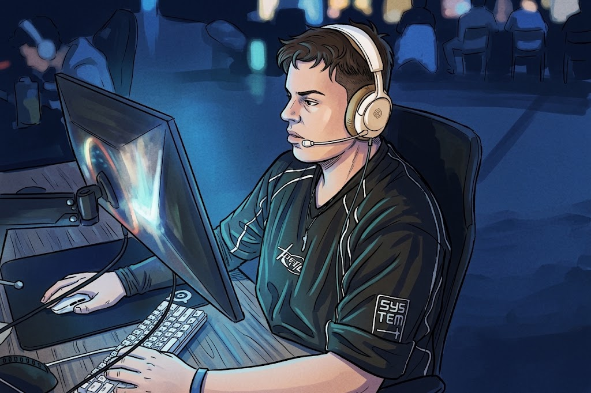

A C Sharks egy kéttagú szoftverfejlesztő csapat. Egyedi weboldalakat és alkalmazásokat készítünk, amelyek átláthatóbbá és egyszerűbbé teszik a mindennapi feladatokat. A tervezés során a használhatóságra, a megbízható működésre és az átgondolt megjelenésre figyelünk.
Varga Attila
Szoftverfejlesztő
Az alkalmazások működésén, az adatkezelésen és a háttérrendszerek fejlesztésén dolgozik.

Radics Bence
Webfejlesztő
A webes felületek kialakításával, a reszponzív megjelenéssel és a felhasználói élménnyel foglalkozik.
Hogyan dolgozunk?
Először megismerjük az elképzelést és a megoldandó problémát, majd közösen meghatározzuk a szükséges funkciókat. A fejlesztés során rendszeresen bemutatjuk az előrehaladást, hogy a visszajelzések már menet közben beépülhessenek. Átadás előtt ellenőrizzük a működést, és segítünk a használat megkezdésében.